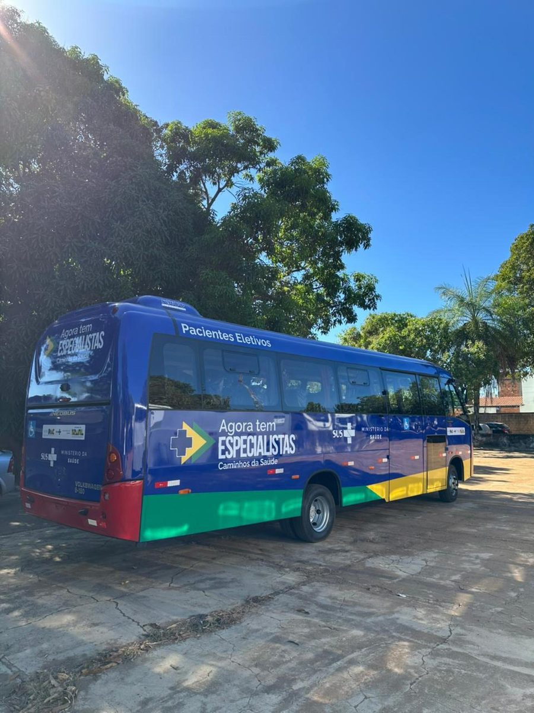

Samais Transporte Sanitário ROTA
Operação completa de transporte sanitário eletivo: central de regulação própria, frota dimensionada, roteirização inteligente e indicadores auditáveis. Para que o paciente chegue ao tratamento — e o gestor saiba exatamente como.
Quem opera
a sua rota.
A Samais Gestão em Saúde é operadora de serviços públicos de saúde com atuação em municípios, estados e consórcios intermunicipais.
Fundada em 2016, a Samais entrega soluções completas e integradas de gestão em saúde por meio de terceirização qualificada. A empresa opera em todos os níveis de gestão pública, com gestão total ou parcial de SAMU 192, UPAs, hospitais, unidades básicas de saúde, exames laboratoriais, gestão de frota e telemedicina.
O ROTA nasce dessa base. Não é uma empresa de transporte que decidiu atender saúde — é uma operadora de saúde que já regula, despacha e monitora frota 24 horas por dia, aplicando essa capacidade instalada ao transporte sanitário eletivo.
Central de regulação médica em operação contínua, com protocolo, registro auditável e escala ininterrupta. A mesma disciplina aplicada ao agendamento e despacho do transporte eletivo.
Rastreamento em tempo real, controle de manutenção preventiva, gestão de combustível e indicadores de disponibilidade por veículo.
Equipe dedicada a contratos públicos, habilitações, prestação de contas e conformidade com a Lei 14.133/2021.
Método de transição que assume a operação sem interromper o atendimento — experiência acumulada em contratos de urgência, onde a parada não é opção.
Experiência em contrato com consórcio intermunicipal de saúde, com central compartilhada e rateio entre municípios-membro.
Estrutura financeira que suporta o ciclo de faturamento público sem repassar pressão de caixa à operação e ao paciente.
O momento é
agora — e é raro.
Pela primeira vez, a União custeia diretamente o transporte de pacientes em hemodiálise e radioterapia.
Em 11 de maio de 2026, o Ministério da Saúde publicou três atos que mudaram a economia do transporte sanitário no SUS. A Portaria GM/MS nº 11.164 regulamentou o transporte sanitário na forma dos arts. 2º-A e 2º-B da Lei nº 12.732/2012. A nº 11.165 dispôs sobre o deslocamento de pacientes. E a nº 11.179 tratou especificamente do transporte em tratamento radioterápico e em Terapia Renal Substitutiva na modalidade hemodiálise.
Deslocamentos intermunicipais superiores a 50 km para hemodiálise e radioterapia passaram a contar com custeio federal específico, dentro de um raio de até 500 km. Os procedimentos foram incluídos na Tabela SUS. O impacto fiscal anual estimado pelo Ministério da Saúde é de R$ 26.047.440 apenas na linha de radioterapia, com vigência a partir de maio de 2026.
Em paralelo, o programa Caminhos da Saúde, integrante do Novo PAC Saúde, está distribuindo 3.300 veículos — vans, micro-ônibus e ambulâncias — a estados e municípios em todo o território nacional, com investimento federal de R$ 1,4 bilhão.


Frota nova recebida pela União, custeio federal do deslocamento e um operador que assume a gestão. O município que articula os três elementos amplia o acesso do paciente sem ampliar proporcionalmente a despesa própria — e o faz dentro de uma janela de política pública que está aberta agora.
Conhecemos
o seu território.
Base cadastral verificada município a município contra a estimativa IBGE de 1º de julho de 2025.
Toda proposta de transporte sanitário começa por uma pergunta simples e frequentemente mal respondida: para onde o seu paciente precisa ir? A resposta não depende do tamanho do município — depende de onde está o serviço de hemodiálise, de radioterapia e de média e alta complexidade que atende a sua população, e de quantos quilômetros separam um do outro.
| Município | População IBGE 2025 | Região de saúde de referência |
|---|---|---|
| Juazeiro do NorteCE | 305.531 | Cariri · Hospital Regional do Cariri |
| SobralCE | 216.519 | Norte do Ceará · Hospital Regional Norte, Santa Casa |
| TimonMA | 182.711 | Eixo Teresina · pactuação interestadual MA–PI |
| CratoCE | 139.027 | Cariri |
| BarbalhaCE | 81.441 | Cariri · Centro de Oncologia do HMSVP |
| São BeneditoCE | 50.058 | Serra da Ibiapaba |
| Guaraciaba do NorteCE | 44.565 | Serra da Ibiapaba |
| Coelho NetoMA | 42.841 | Leste maranhense · Hospital Macrorregional de Caxias |
| MacauRN | 28.350 | Litoral norte potiguar |
| BatalhaPI | 27.129 | Norte do Piauí |
| Areia BrancaRN | 27.115 | Mossoró |
| São MiguelRN | 23.100 | Alto Oeste · Pau dos Ferros |
| CambuciRJ | 15.069 | Noroeste Fluminense · Itaperuna |
| Baixa Grande do RibeiroPI | 13.983 | Sul do Piauí · Floriano |
| Rio de ContasBA | 13.184 | Chapada Diamantina · Brumado |
| Santana do MatosRN | 12.722 | Central potiguar |
| AngicosRN | 11.985 | Vale do Açu · Assú |
| CurimatáPI | 11.581 | Extremo sul do Piauí · Corrente |
| PatuRN | 11.215 | Alto Oeste · Pau dos Ferros |
| UmarizalRN | 10.655 | Alto Oeste · Pau dos Ferros |
| Ribeiro GonçalvesPI | 6.182 | Sul do Piauí |
| Total | 1.274.963 | 6 unidades federativas |
Rio de Contas-BA: dado do Censo 2022. Demais municípios: estimativa IBGE com data de referência de 1º de julho de 2025, publicada no Diário Oficial da União.
Quantos pacientes
estão nessa rota.
Dimensionamento a partir da prevalência real de doença renal crônica e da incidência de câncer, aplicada à sua população.
O transporte sanitário eletivo tem uma característica que o distingue da urgência: a demanda é previsível e repetitiva. Um paciente em hemodiálise faz o mesmo trajeto três vezes por semana, indefinidamente. Um paciente em radioterapia faz o mesmo trajeto por cerca de 25 dias consecutivos. Isso permite dimensionar frota e rota com precisão — e é o que torna possível oferecer contrato de preço fixo com escala garantida.
O Censo Brasileiro de Diálise 2024, da Sociedade Brasileira de Nefrologia, registrou prevalência de 812 pacientes por milhão de habitantes, em curva ascendente contínua desde 2014. O INCA projeta 781 mil novos casos de câncer por ano no Brasil entre 2026 e 2028. Aplicados à população desta região — e apresentados em faixa, porque a prevalência de diálise varia de forma relevante entre os estados do Nordeste:
Demanda por região
| Região | População | Pacientes em diálise | Pacientes em radioterapia/ano | Deslocamentos/ano |
|---|---|---|---|---|
| CaririCE | 525.999 | 214–403 | 638 | 49.334–78.818 |
| Norte do CearáCE | 311.142 | 127–238 | 378 | 29.262–46.578 |
| Eixo Teresina–TimonMA · PI | 252.681 | 103–194 | 307 | 23.743–37.939 |
| Rio Grande do NorteRN | 125.142 | 51–96 | 152 | 11.756–18.776 |
A faixa de pacientes em diálise reflete a variação de prevalência entre os estados registrada pelo Censo SBN 2024; o dimensionamento definitivo parte do número de pacientes efetivamente inscritos na regulação municipal, levantado em diagnóstico de campo. Estes são apenas os deslocamentos das duas linhas com custeio federal específico. Consultas especializadas, exames de imagem, cirurgias eletivas e Tratamento Fora de Domicílio somam volume adicional relevante, a ser levantado junto à regulação municipal no diagnóstico de campo.
O que a Samais
entrega.
Operação completa, com indicador auditável em cada etapa.

Hora de saída confirmada na véspera. Veículo identificado, com motorista treinado para acolhimento de paciente crônico. Chegada com antecedência ao serviço e retorno garantido — sem espera indefinida no ponto de destino após a sessão. Para quem faz hemodiálise três vezes por semana, essa previsibilidade é parte do tratamento.
O financiamento
que viabiliza.
Boa parte deste serviço já tem fonte de custeio definida — o que falta é a estrutura que a converte em operação.
A partir de maio de 2026, os deslocamentos intermunicipais acima de 50 km para hemodiálise e radioterapia contam com procedimentos próprios na Tabela SUS, custeados pela União dentro de um raio de até 500 km. Para hemodiálise, o custeio se aplica ao deslocamento em âmbito estadual; para radioterapia, alcança também o deslocamento interestadual.
Somam-se a isso duas outras fontes que o município já acessa ou pode acessar: os recursos do Tratamento Fora de Domicílio e a cessão de frota pelo programa Caminhos da Saúde, que retira do contrato o custo de aquisição e depreciação de veículo.
| Fonte | Cobre | Condição |
|---|---|---|
| Custeio federal · hemodiálise | Deslocamento intermunicipal do paciente em Terapia Renal Substitutiva | Acima de 50 km, âmbito estadual, raio até 500 km |
| Custeio federal · radioterapia | Deslocamento do paciente em tratamento radioterápico | Acima de 50 km, inclusive interestadual, raio até 500 km |
| Caminhos da Saúde · Novo PAC | Veículo — van, micro-ônibus ou ambulância | Município ou estado beneficiário do programa |
| Tratamento Fora de Domicílio | Deslocamento para procedimento não disponível no município | Conforme regulação e pactuação vigentes |
| Recurso próprio municipal | Transporte eletivo intramunicipal e deslocamentos abaixo de 50 km | Bloco de custeio da atenção à saúde |
Quando o veículo é cedido pelo programa federal, sai da composição do contrato o custo de aquisição e depreciação — cerca de 23% do custo por quilômetro rodado. Esse ganho é repassado ao município na formação do preço. É a variável isolada com maior impacto sobre o valor final do contrato, e recomenda-se articulá-la antes da contratação.
Composição do
valor contratual.
Preço aberto, decomposto por rubrica, tecnicamente justificado e defensável na Lei 14.133/2021.
O valor contratual da Samais é formado pelo custo direto operacional — frota, pessoal, combustível, manutenção e insumos — acrescido de uma composição de encargos, provisões e estrutura. Essa composição é apresentada aberta, rubrica a rubrica, porque o gestor público tem o direito de saber exatamente o que está contratando.
| Rubrica | % sobre o custo direto | Natureza |
|---|---|---|
| Tributos sobre faturamento PIS, COFINS, ISS municipal e provisão de IR/CSLL | 13,5% | Obrigatório |
| Despesas administrativas e de gestão corporativa Direção, jurídico, financeiro, RH, coordenação regional, auditoria | 8,0% | Estrutural |
| Tecnologia, sistemas e roteirização Plataforma de regulação, rastreamento, integrações com sistemas do SUS | 5,0% | Diferencial |
| Reserva técnica operacional Frota reserva, equipamentos e contingências de operação | 3,0% | Prudencial |
| Capacitação continuada Formação de motoristas e equipe em acolhimento de paciente crônico | 2,0% | Diferencial |
| Contingências, seguros e garantias contratuais Seguro de passageiro, garantia de execução, provisões trabalhistas | 2,5% | Prudencial |
| Remuneração empresarial | 4,0% | Resultado |
| Composição total | 38,0% | Sobre o custo direto |
A alíquota de ISS varia conforme a legislação do município contratante e impacta diretamente a primeira rubrica. A composição apresentada considera regime de Lucro Real; em outras configurações tributárias o componente se altera e será recalculado na proposta definitiva.
O custo por
habitante.
O número que traduz o contrato para a escala do orçamento municipal.
Um contrato de transporte sanitário se mede melhor por habitante do que por valor absoluto. Ele varia conforme a distância entre o município e o serviço de referência — quanto mais longe o paciente precisa ir, maior o quilômetro rodado por habitante e maior o custo unitário.
| Perfil do município | Distância ao serviço de referência | Faixa referencial por habitante/mês |
|---|---|---|
| Polo regional ou município com serviço local | Menos de 50 km | R$ 0,61 – 0,74 |
| Município de origem próximo | 50 a 150 km | R$ 0,74 – 0,94 |
| Município de origem intermediário | 150 a 350 km | R$ 1,01 – 1,42 |
| Município de origem distante | 350 a 500 km | R$ 1,62 – 2,43 |
Menos de R$ 8,70 por habitante ao ano — cerca de dois centavos por habitante por dia — para uma operação completa de transporte sanitário eletivo, com central de regulação, frota gerida e indicadores auditáveis.
Referência por município
| Município | População | Por habitante/mês | Referência mensal | Referência anual |
|---|---|---|---|---|
| Juazeiro do NorteCE | 305.531 | R$ 0,68 | R$ 207.761 | R$ 2,49 mi |
| SobralCE | 216.519 | R$ 0,68 | R$ 147.233 | R$ 1,77 mi |
| TimonMA | 182.711 | R$ 0,68 | R$ 124.243 | R$ 1,49 mi |
| CratoCE | 139.027 | R$ 0,68 | R$ 94.538 | R$ 1,13 mi |
| BarbalhaCE | 81.441 | R$ 0,68 | R$ 55.380 | R$ 664 mil |
| São BeneditoCE | 50.058 | R$ 0,84 | R$ 42.049 | R$ 505 mil |
| Guaraciaba do NorteCE | 44.565 | R$ 0,84 | R$ 37.435 | R$ 449 mil |
| Coelho NetoMA | 42.841 | R$ 0,84 | R$ 35.986 | R$ 432 mil |
| BatalhaPI | 27.129 | R$ 1,22 | R$ 33.097 | R$ 397 mil |
| MacauRN | 28.350 | R$ 0,84 | R$ 23.814 | R$ 286 mil |
| Areia BrancaRN | 27.115 | R$ 0,84 | R$ 22.777 | R$ 273 mil |
| São MiguelRN | 23.100 | R$ 0,68 | R$ 15.708 | R$ 188 mil |
| CambuciRJ | 15.069 | R$ 0,84 | R$ 12.658 | R$ 152 mil |
| Baixa Grande do RibeiroPI | 13.983 | R$ 2,03 | R$ 28.385 | R$ 341 mil |
| Rio de ContasBA | 13.184 | R$ 0,84 | R$ 11.075 | R$ 133 mil |
| Santana do MatosRN | 12.722 | R$ 0,84 | R$ 10.686 | R$ 128 mil |
| AngicosRN | 11.985 | R$ 0,84 | R$ 10.067 | R$ 121 mil |
| CurimatáPI | 11.581 | R$ 1,22 | R$ 14.129 | R$ 170 mil |
| PatuRN | 11.215 | R$ 0,84 | R$ 9.421 | R$ 113 mil |
| UmarizalRN | 10.655 | R$ 0,84 | R$ 8.950 | R$ 107 mil |
| Ribeiro GonçalvesPI | 6.182 | R$ 2,03 | R$ 12.549 | R$ 151 mil |
São faixas referenciais para orientar o planejamento orçamentário, calculadas sobre a população e a distância ao serviço de referência. O valor definitivo depende do dimensionamento em diagnóstico de campo — número de pacientes efetivamente elegíveis na regulação municipal, rotas consolidadas, composição da frota e cessão de veículos pelo programa federal. A Samais realiza esse diagnóstico sem custo e sem compromisso de contratação.
Operação consorciada
Municípios contíguos que compartilham o mesmo serviço de referência podem contratar em conjunto, por consórcio intermunicipal ou por adesão a consórcio de saúde já constituído. A central de regulação passa a ser única e rateada, o que reduz o custo por habitante de cada município-membro sem reduzir o nível de serviço. É a configuração recomendada para municípios abaixo de 60 mil habitantes.
Por que
a Samais.
Quatro razões objetivas, verificáveis em contrato vigente.
Regular, despachar e monitorar frota em operação contínua é a competência central da Samais em contratos de urgência. O transporte eletivo é a aplicação dessa mesma capacidade a uma demanda programável — não uma competência nova a ser construída.
Método de assunção de operação testado em serviços que não podem parar. O paciente não percebe a troca de operador — percebe apenas a melhora de pontualidade e previsibilidade.
Indicador auditável desde o primeiro mês, em formato adequado ao controle interno, ao Tribunal de Contas e à prestação de contas ao Ministério da Saúde. A gestão recebe dado, não relatório descritivo.
Composição decomposta rubrica a rubrica, sem valor agregado sem justificativa. O que está no contrato é o que está na planilha, e a planilha é apresentada antes da assinatura.
Todo contrato ROTA é firmado com indicadores mínimos pactuados: pontualidade de embarque, taxa de comparecimento ao tratamento e disponibilidade de frota. Os parâmetros são acordados com a gestão municipal na fase de dimensionamento e passam a integrar o instrumento contratual, com apuração mensal.
Próximos
passos.
Três etapas até a proposta definitiva. Nenhuma delas exige compromisso de contratação.
Apresentação do modelo à Secretaria Municipal de Saúde e alinhamento sobre o perfil de deslocamento da população. Duração aproximada de noventa minutos, presencial ou remota.
Levantamento junto à regulação municipal dos pacientes efetivamente elegíveis, rotas praticadas, frota disponível e veículos recebidos pelo programa federal. É a etapa que converte faixa referencial em valor definitivo. Realizada pela Samais sem custo para o município.
Dimensionamento fechado, planilha de composição aberta, minuta de instrumento contratual com indicadores pactuados e cronograma de implantação. Documento pronto para instrução de processo licitatório.
O custeio federal está vigente desde maio de 2026 e a distribuição de frota do Caminhos da Saúde está em curso. Municípios que estruturarem a operação enquanto os dois programas estão ativos partem de uma base de custo menor — e a base de custo do primeiro contrato tende a definir o patamar das renovações seguintes.